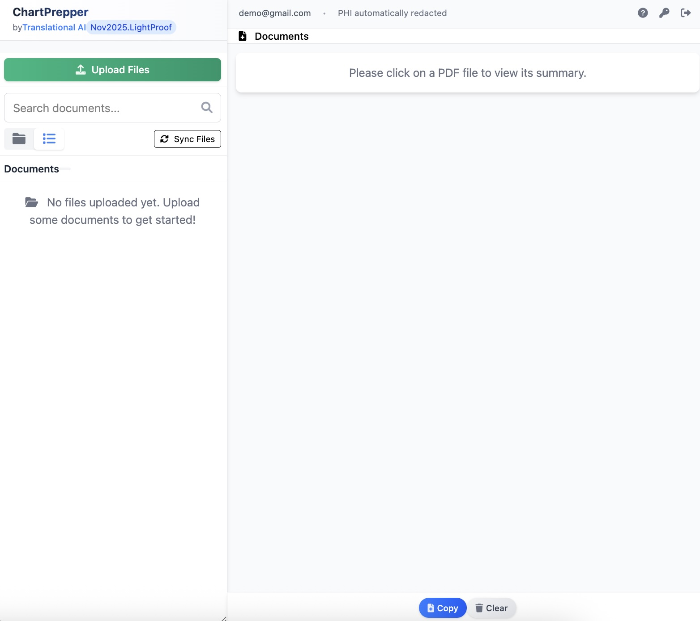

One Architecture, Two Modes
ChartPrepper applies a single architectural contract across all input modes: every fact in the output traces to a span in the source, or it is suppressed. This is not prompt discipline—it is a structural property of the system. The model cannot emit content that fails the provenance check, regardless of how the prompt is written or how the model behaves on any given input.
Referral mode: External clinical documents (faxed or scanned PDF referrals) are processed into structured clinical summaries. Every extracted fact anchors to a specific location in the source document.
Note generation: From any referral summary, clinicians add their own notes
(physical exam, impression, plan) and generate a complete clinical note. Every generated statement
carries inline source citations — [1] [2] markers that trace back to the exact input
that produced it, whether from the summary or the clinician's additions. A provenance footer maps
each citation to its verbatim source quote. On clipboard copy, citations are automatically stripped
for clean EMR paste.
LightScribe mode: A sub-component of ChartPrepper that expands brief clinician-authored seed notes into conventional clinical structure. Every expanded sentence anchors to a span in the seed note. Content the clinician did not assert is suppressed — the same provenance architecture applied to a shorter, clinician-authored source.
Privacy-First Clinical Design

Designed for high-stakes clinical environments, ChartPrepper automatically identifies and filters PHI while maintaining the integrity of clinical data. All processing occurs within secure, Canadian-hosted infrastructure aligned with PIPEDA principles.
Features
Error Opacity, Solved
Most clinical AI produces fluent output that is wrong in ways the clinician must catch by re-reading. ChartPrepper sidesteps generation opacity by solving error opacity—errors become findable. Audit shifts from "re-read everything" to "spot-check anchors."
Structural, Not Prompt-Based
Provenance is a structural property of the system, not prompt discipline. The model cannot emit content that fails the provenance check. Prompt engineering has a ceiling (Asgari et al., 2025)—this architecture operates below it.
Audited Accuracy
~0.64% error rate across 785 statements from 50 referrals, with zero fabricated facts. Published benchmarks for prompt-engineered approaches report 1–3% hallucination and 3.45% omission rates at ceiling.
Inline Note Provenance
Generated clinical notes carry per-statement source citations. Each [n] marker
traces to the exact input — summary or clinician additions — that produced it. Verbatim
fields (PMH, medications, allergies) are carried over unchanged and labeled [chart].
Citations strip automatically on clipboard copy for clean EMR paste.
EMR Ready
Optimized for seamless transfer of structured clinical data directly into your existing practice management systems.
Security and Privacy
- End-to-end encryption for all data in transit and at rest
- Aligned with PIPEDA privacy principles and provincial privacy requirements
- Self-assessed alignment with HIPAA security protocols (not certified)
- All data stored and processed securely in Canada
- No data used for AI training or shared with third parties
- Privacy by Design approach—automatically filters PHI while maintaining accuracy
Why Provenance Matters
Most clinical AI systems—including ambient scribes and prompt-engineered summarizers—produce fluent, organized output that is wrong or incomplete in ways the clinician must catch by re-reading. The clinician cannot audit absence (what the model missed) or fabrication (what the model invented) without comparing output to source line by line. This is generation opacity.
ChartPrepper does not attempt to solve generation opacity. It sidesteps it by solving error opacity. A clinician auditing ChartPrepper output asks one question: "Does this fact have a source anchor I can verify?" If yes, the fact is grounded. If no, the system would not have emitted it. This reduces audit from "re-read everything" to "spot-check anchors."
Contrast with Adjacent Approaches
Ambient AI scribes capture audio and generate notes. A VHA evaluation of 11 AI scribe tools (Reddy et al., Annals of Internal Medicine, 2026) found AI-generated notes scored lower than human notes across all 10 PDQI-9 quality domains, with the largest deficits in thorough (−1.23), organized (−1.06), and useful (−1.03). The authors explicitly flag patient safety risk from key errors when adopted without rigorous oversight.
Practicing physicians confirm the pattern: histories that are "too good," physical exam findings dropped despite being stated aloud, vitals omitted. One physician describes notes that are "very good in organizing the history, medications, summaries of investigations but not good at capturing the physical exam... despite talking out loud it often writes no physical findings reported." Another: "It certainly requires going back and making sure the notes are accurate. It's not yet 'good enough' on its own."
The failure mode is the same across tools: AI scribes solve generation (audio → note) but leave the clinician to audit unanchored prose. The time savings are real—but so is the re-read tax. ChartPrepper is the counter-example: where scribes produce fluent output the clinician must re-read, provenance makes audit structural. Every physician who has felt the "I have to re-read everything anyway" tax is primed to understand why provenance matters.
ChartPrepper's LightScribe mode inverts the scribe contract entirely: the clinician's seed note is the source of truth, so the model cannot lose what the clinician chose to assert. The audit question becomes "did the expansion stay faithful to my seed?" rather than "did the model hear everything I said?"
Prompt-engineered summarization has a ceiling. Asgari et al. (npj Digital Medicine, 2025) reported a 1.47% hallucination rate and 3.45% omission rate across 18 prompt engineering experiments—and chain-of-thought prompting worsened errors. ChartPrepper's ~0.64% error rate with zero fabrications reflects an architectural difference, not better prompts.
Honest Limitations
Provenance does not guarantee clinical correctness—a faithfully extracted fact from a poorly written referral is still grounded in a poorly written referral. It does not eliminate the need to read the output; it changes what reading the output costs. And the model is still a black box—the architecture works by constraining outputs, not by understanding reasoning.
Status
ChartPrepper is deployed in real clinical environments. Internal QA (single specialty, not a clinical trial) demonstrates practical value in referral workflows. The architecture generalizes across input modes—referral summarization and note expansion share the same structural guarantee. Available for pilot use with select institutions.